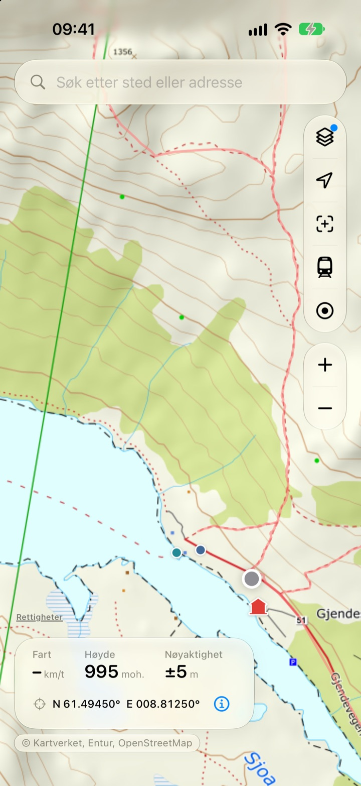
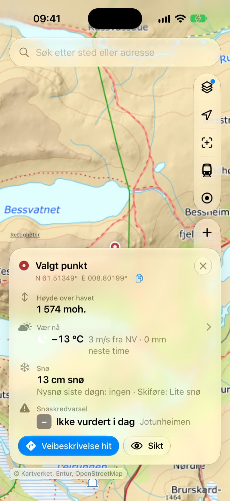

User guide
Varde
Maps for hiking and travel in Norway. Everything you need to get started and make the most of the app.



Maps for hiking and travel in Norway. Everything you need to get started and make the most of the app.


About this guide. Names of buttons and menus are written like this, exactly as they appear in the app when your iPhone is set to English.
The screenshots were taken in Jotunheimen and Oslo with the app in Norwegian. The layout is the same in English.
Varde opens straight into the map. The first time, the app asks for permission to use your location. Allow it, so the map can show where you are, follow you and guide you.
Move the map with one finger, pinch to zoom and rotate with two fingers.
Tap Maps and views at the top of the button column to choose a map and what is shown on top. Tap Done when you are finished.
| Map | Best for |
|---|---|
| Apple Maps | Cities, roads and places worldwide |
| Topographic | Hiking in Norway: contours, paths, bogs, forest and hill shading |
| Greyscale | The topographic map in grey, so whatever you put on top stands out |
| Toporaster | The Mapping Authority's classic paper map style |
| Nautical chart | Boating and the coast: depths, skerries and navigation marks |
| Aerial imagery | See the terrain, forest and buildings as they are |
| Aerial imagery with labels | Aerial imagery with place names and roads |
The Mapping Authority's maps cover Norway. Outside Norway, Apple's maps and imagery are shown.
The Dim Map slider makes the base map paler, so trails, cabins, the viewshed and routes stand out.

Turn on Cabins under Outdoors. Norwegian Trekking Association (DNT) cabins are red and other cabins blue, with the same symbols as ut.no. Cabins appear when you zoom in.
Tap a cabin to see whether it is staffed, self-service or no-service, how many beds it has, whether it is locked with the DNT key, and a link to ut.no or the cabin's website.
Turn on Trails for marked hiking and cycling routes from the national trail database. Tap a route to see its name, type, marking, grading (easy, medium, demanding or expert) and who maintains it.
Turn on Stops under Public transport to see bus, train, tram and boat stops when you zoom in. See chapter 7.

Tap the Search for a place or address field at the top and type what you are looking for. Results appear below the field, with type and municipality, for example “Gjendebu – Tourist cabin · Lom”.
You can also type coordinates, for example from a route description or a geocache. Varde understands decimal degrees, degrees and minutes, degrees, minutes and seconds, and UTM.
| Format | Example |
|---|---|
| Decimal degrees | N 61.49450° E 008.81250° |
| Degrees and minutes | N 61° 29.670' E 008° 48.750' |
| Degrees, minutes and seconds | N 61° 29' 40.2" E 008° 48' 45.0" |
| UTM | 32V 490017 6817883 (easting before northing) |
Tap Crosshair in the button column. A crosshair appears in the middle of the map, and the coordinates and elevation of the point underneath update as you move the map. The map stops following you, so it stays still while you aim. Tap the button again to remove the crosshair.
Touch and hold a spot on the map. An info card shows Selected point with the coordinates and the information for that exact point.
| Row | What it shows |
|---|---|
| Elevation above sea level | Terrain elevation from the Mapping Authority's laser data. In tunnels and on bridges, the terrain is shown, not the road. |
| Current weather | Temperature, wind and precipitation for the next hour from the Norwegian Meteorological Institute |
| Snow | Snow depth, new snow in the last 24 hours and ski conditions from seNorge/NVE |
| Avalanche warning | Today's danger level for the area from Varsom/NVE |
| Tides | Next high and low tide at the nearest station |
Choose which rows to show under When you touch and hold the map in Maps and views.
Tap the Current weather row to open a detailed Weather Forecast with the current conditions, wind, humidity, pressure and cloud cover, an overview of the Next 24 Hours and Coming Days.
Snow depth and ski conditions are calculated daily with NVE's snow model on a 1 × 1 km grid. Local differences such as drifts and bare ridges are not included. Ski conditions are described as bare, little snow, wet snow or dry snow.

The viewshed analysis shows which parts of the terrain you can see from a point. The visible area is coloured magenta on the map.
Varde fetches the terrain model from the Mapping Authority and adds an assumed tree height where the topographic map shows forest. For every place on the map, it checks whether terrain or forest blocks the line of sight. The curvature of the earth and atmospheric refraction are taken into account.
If you are in open terrain close to a forest edge, the forest blocks the view in that direction, however far out you zoom.
If the point is in a forest, two menus appear below the View from the point bar:
| Menu | Options |
|---|---|
| Tower / On the ground | How high above the ground you are, for example in a lookout tower: 0–50 metres. Eye height is added on top. |
| Forest | The assumed height of the forest: 5–30 metres (15 m by default), or Ignore all forest to use the terrain only. |
| No forest where I stand | A switch in the Forest menu. Use it when the map shows forest where it has actually been felled or cleared. The forest around you is then treated as open terrain. |
Tap Directions here on the info card for a place or a point. The To … card shows the alternatives.
Choose Public transport, Car, Walk or Bicycle. Each alternative shows travel time, distance and any changes. Tap an alternative to see every step.
By default, the trip starts From your location. Tap it to Choose where your trip starts, and search for another place.
Tap Elevation profile to see how much the route climbs and descends, and its highest and lowest points.

Varde shows stops for bus, train, metro, tram, boat and air, with real-time departures from Entur.
Tap Nearest stop (the tram symbol) in the button column. Varde finds the stop that is the shortest walk from where you are, or from the place you searched for, and shows the walking route and the next departures.
Turn on Stops in Maps and views. Stops appear when you zoom in. Tap a stop to see its departures.
Tap Tracks (the circle at the bottom of the button column) to record your trip and see earlier trips.

Coverage is often poor in the mountains. Download the maps for the area you are heading to while you are online, and they will show without a connection too.
| Level | Best for |
|---|---|
| Overview | Large areas, to see where you are |
| Medium | Long trips over several days |
| Detailed | Ordinary hikes, with paths and contours |
| Very detailed | Smaller areas with lots of detail |
| All details | Small areas, for the finest details |
The more detail, the more space the map takes. If the area is too large for the level of detail, you are asked to zoom in or choose a lower level.
Varde has no server of its own, no account, no tracking and no ads. Coordinates are only sent to the services below when needed, for example to look up the terrain elevation where you are or to plan a trip. Tracks you record are stored only on your device.
| Source | Used for |
|---|---|
| Norwegian Mapping Authority | Topographic maps, nautical charts, terrain elevation, tides, addresses, trails and cabins |
| Apple | Maps, aerial imagery, place search and directions for car, walking and cycling |
| Entur | Public transport journeys, stops and real-time departures |
| Norwegian Meteorological Institute | Weather forecasts |
| NVE / Varsom | Avalanche warnings |
| seNorge / NVE | Snow depth, new snow in the last 24 hours and ski conditions |
| OpenStreetMap | Beds and websites for cabins, © OpenStreetMap contributors (ODbL) |
Under About Varde at the bottom of Maps and views you will find the version, the sources with links and the privacy statement.
Maps for hiking and travel in Norway
Questions, bugs or suggestions? Write to kosunde@outlook.com
© 2026 Knut Olav Sunde · Maps © Kartverket